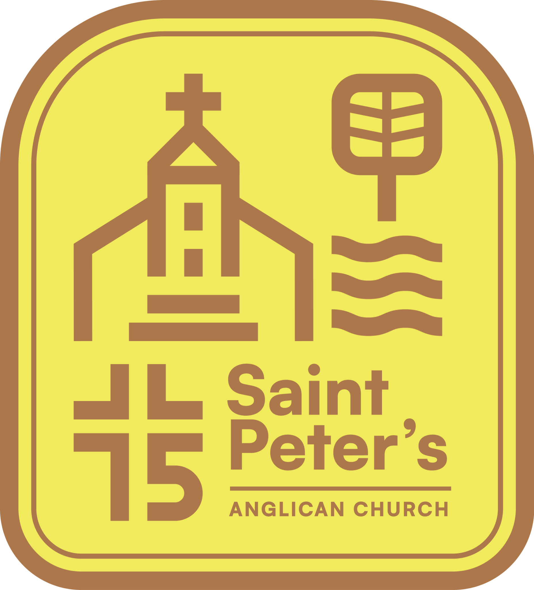
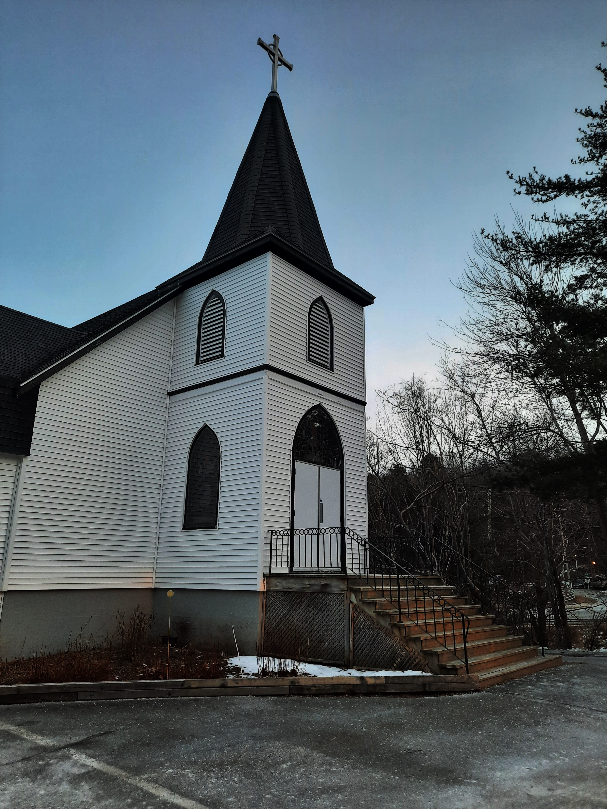

Make room
for faith.
Take a breath. Join us for prayer, reflection, and worship on Sunday. You don’t need to have all the answers to take a seat.
Choose a service
Saint Peter’sANGLICAN CHURCH · BIRCH COVEROOTED IN FAITH. OPEN TO YOU.
A place to belong, grow in faith, and share life together. Find your community at Saint Peter’s in Birch Cove.
Come as you are. There’s a place for you here.

YOUR NEIGHBOURHOOD CHURCH SINCE 1951A FAITH COMMUNITY. A SPIRITUAL HOME.
Life is full of questions. Finding a place to explore them shouldn’t be another one.
Whether you’re new to church, returning after time away, or simply looking for connection, you’re welcome here.
At Saint Peter’s, we grow in faith by worshipping together and reaching out to others. Rooted in the Anglican tradition and part of Birch Cove since 1951, we’re here to walk alongside you.
Find your next stepSTART SMALL. FIND SOMETHING MEANINGFUL.
Take a breath. Join us for prayer, reflection, and worship on Sunday. You don’t need to have all the answers to take a seat.
Choose a serviceStart with a hello. Introduce yourself to a greeter and discover the people and gatherings that make this a community.
Explore what’s onAs you settle in, find ways to care for others and share your gifts. Small acts of service can become a meaningful part of life.
Ask how to get involvedTHERE’S MORE TO LIFE TOGETHER.
A conversation. A moment of peace. A growing sense of purpose.
Your next chapter can start with a simple hello.
CELEBRATING 75 YEARS
For 75 years, Saint Peter’s has been a spiritual home in Birch Cove. Generations have gathered here to worship, care for neighbours, and put faith into practice.
As we celebrate our story, we look forward to the people who will help write what comes next. People like you.
Be part of our next chapterYOUR FIRST SUNDAY STARTS HERE
3 Dakin Drive
Halifax, Nova Scotia · B3M 2C9
Sunday services are at 8 am (spoken) and 10 am (with music). Arrive a few minutes early to settle in and say hello to a greeter.
Yes. A nursery is available on Sundays for children to play during the service. Ask a greeter to help you find it.
The church is wheelchair accessible. If you would like communion brought to your seat, please let a greeter know.
Call 902-443-1969 or email office@stpetersbirchcove.org. Office hours are Wednesday and Thursday, 8:30 am–3 pm.